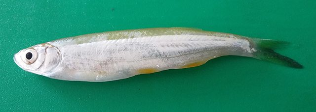

फुलो चेलवाFinescale Razorbelly Minnow
Salmostoma phulo · Cyprinidae · FSH-0075

- Scientific name वैज्ञानिक नाम
- Salmostoma phulo (Hamilton, 1822)
- Family कुल
- Cyprinidae
- Hindi हिंदी
- फुलो चेलवा
- Local names स्थानीय नाम
- finescale razorbelly minnow, salmostoma phulo, phulo chelwa
- Status here यहाँ की स्थिति
- native
- Movement आवागमन
- Resident, here all year
- Known from कहाँ दर्ज
- Others have published records from the wider Awadh–Purvanchal plain, none yet from Basti–Ayodhya अवध–पूर्वांचल से दूसरों के प्रकाशित अभिलेख, बस्ती–अयोध्या से अभी नहीं
- IUCN IUCN
- not evaluated
- Review समीक्षा
- not yet reviewed
When to look कब देखें
Present all year. साल भर मौजूद।
Uses and possibilities उपयोग और संभावनाएँ
Drawn from the documented uses in the profile below, where each is labelled traditional, current or a research lead. All uses →
Tell it apart from इनसे अलग पहचानें
फुलो चेलवा / Finescale Razorbelly Minnow
Salmostoma phulo (Hamilton, 1822) — Cyprinidae
फुलो चेलवा — गंगा और घाघरा नदी प्रणालियों के खुले और बहते जल में पाई जाने वाली एक पतली, चमकदार चांदी जैसी चेलवा मछली, जिसका पेट छूरे की तरह धारदार होता है और जिस पर बेहद बारीक चोइयां (शल्क) होती हैं।
Quick Identification त्वरित पहचान
| Feature | Description |
|---|---|
| Body shape | Elongate, strongly compressed laterally with a sharp, razor-like ventral keel |
| Scale size | Minute, exceptionally fine scales with 80 to 90 scales in the lateral line |
| Mouth orientation | Strongly oblique, superior mouth directed upwards for surface feeding |
| Coloration | Translucent silvery-white with a brilliant glittering silver lateral stripe |
| Habits | Surface-swimming pelagic shoaler leaping out of water to evade predatory fish |
Slender, strongly compressed silvery minnow distinguished by a razor-sharp abdominal keel extending between the pelvic fins and anal fin, and by remarkably minute scales (80 to 90 along the lateral line). The mouth is tilted steeply upwards, suited for skimming insects from the surface film. The body glistens like polished silver in the water, accented by an iridescent lateral band.
हिंदी: पतली, चपटी और चांदी जैसी चमकदार सतह पर तैरने वाली मछली। इसका पेट नीचे से चाकू की धार जैसा पतला होता है और शरीर पर बहुत बारीक चोइयां होती हैं। इसका मुंह ऊपर की ओर खुला होता है।
Morphology शारीरिक संरचना
| Feature | Description | Source |
|---|---|---|
| Total length (maximum) | 12 cm TL | Froese & Pauly (2025), FishBase |
| Ventral keel | Sharp cutting abdominal keel extending from pelvic base to anal fin | Day (1889) |
| Fin structure | Dorsal fin set far back, opposite the anterior rays of long anal fin | Talwar & Jhingran (1991) |
The body is elongated and strongly compressed from side to side. The ventral profile is more arched than the dorsal, forming a sharp cutting keel from below the pelvic fin origin to the anal fin. The head is pointed and compressed; the mouth is directed obliquely upwards, with the lower jaw projecting slightly beyond the upper and bearing a small symphysial knob. Barbels are completely absent. The lateral line is complete, curving gently downwards along the lower belly and carrying 80 to 90 small, easily dislodged cycloid scales. The dorsal fin has 9 rays (Talwar & Jhingran 1991) and is inserted behind the pelvic fins, situated above the start of the anal fin, which has 18 to 21 branched rays (Day 1889). The caudal fin is deeply forked with pointed lobes. Coloration is glistening silvery-white with a bright lateral stripe.
हिंदी: FishBase (Froese & Pauly 2025) के अनुसार अधिकतम कुल लंबाई 12 सेमी होती है। पेट के नीचे श्रोणि पंख से गुदा पंख तक एक धारदार उभार होता है। मूंछें (बार्बल्स) नहीं होतीं।
Behaviour & Ecology व्यवहार एवं पारिस्थितिकी
An obligate pelagic, surface-dwelling schooling fish that prefers clear, flowing waters of river channels, canal waterways, and undisturbed oxbow lakes. It travels in tight, synchronized surface shoals that dimple the water surface while skimming for floating prey. When pursued by riverine predatory fish such as Wallago attu or Channa, the entire shoal bursts across the water in frantic skipping leaps, bouncing several times across the surface to break predatory sightlines.
हिंदी: यह नदियों और नहरों की ऊपरी सतह पर बड़े-बड़े झुंडों में तैरती है। यह पानी की सतह से तैरते कीड़े चुनती है। बड़ी शिकारी मछलियों के हमले पर यह पानी के ऊपर लगातार उछलकर भागती है।
Life Cycle / Phenology जीवन चक्र एवं फेनोलॉजी
Spawning occurs during the southwest monsoon months from July to September, triggered by increased river currents, turbidity, and oxygenation (Talwar & Jhingran 1991). The fish does not undertake long-distance migrations, instead moving into submerged sandy shoals or flooded river margins. The female scatters numerous tiny, non-adhesive or weakly adhesive spherical eggs over submerged vegetation and clean sandy substrates, where they hatch rapidly under warm monsoon temperatures (Day 1889). Larvae feed on microscopic rotifers before developing juvenile keel morphology.
हिंदी: प्रजनन वर्षा ऋतु में जुलाई से सितंबर के दौरान होता है (Talwar & Jhingran 1991)। मछली बाढ़ के पानी में रेतीले किनारों पर अंडे बिखेरती है (Day 1889)। गर्म पानी में अंडों से तेजी से बच्चे निकलते हैं।
Host Plants or Prey आहार एवं शिकार
Planktivorous and surface insectivore. It feeds on cladocerans, copepods, rotifers, floating terrestrial insects (ants, winged termites, midges), and aquatic insect nymphs including mosquito larvae and mayfly nymphs. Its upward-directed mouth and sharp gill rakers allow it to strain fine zooplankton while plucking surface bugs effortlessly.
हिंदी: इसका मुख्य भोजन पानी की सतह पर गिरने वाले कीड़े जैसे चींटियां, मच्छर के लार्वा, मक्खियां और सूक्ष्म जलीय जीव (जूप्लैंकटन) हैं। यह अपने ऊपर की ओर खुले मुंह से पानी की ऊपरी सतह को छानती है।
Predators / Natural Enemies प्राकृतिक शत्रु एवं शिकारी
Serves as an essential primary forage species in riverine food webs. It is heavily preyed upon by predatory fish such as the freshwater shark (Wallago attu), bachcha (Eutropiichthys vacha), and freshwater garfish (Xenentodon cancila). Plunging fish-eating birds, including the Little Cormorant (Microcarbo niger), Little Egret (Egretta garzetta), and River Tern (Sterna aurantia), systematically target surface shoals.
हिंदी: यह नदियों की एक प्रमुख आहार-मछली (चारा मछली) है जिसे पढ़िन, बाम और कांसी जैसी बड़ी मछलियां खाती हैं। साथ ही पनकौआ, बगुला और टिटहरी जैसी जल-पक्षी सतह से इसका शिकार करते हैं।
Agricultural / Human Relevance कृषि एवं मानव उपयोगिता
Valued in rural fisheries as a popular and affordable small indigenous fish species (SIFS). It is harvested in fine-mesh drag nets and sold fresh in rural markets across Awadh, where it is consumed whole (head and bones included), providing a vital dietary source of bioavailable calcium, phosphorus, vitamin A, and essential fatty acids for local fishing communities.
हिंदी: यह एक अत्यंत पौष्टिक छोटी देशी मछली (SIFS) है जिसे ग्रामीण बाजारों में बहुत पसंद किया जाता है। इसे साबुत खाया जाता है, जिससे ग्रामीणों को भरपूर कैल्शियम, फास्फोरस और विटामिन मिलता है।
Expected Locally क्षेत्रीय संभावना
Not a field record. Written from published accounts for eastern Uttar Pradesh. No confirmed local sighting yet — if you have seen it, that is what the atlas needs.
अभी तक स्थानीय पुष्टि नहीं। यह विवरण प्रकाशित स्रोतों से है, किसी अवलोकन से नहीं।
GBIF holds published records across the northern Gangetic river system and throughout Uttar Pradesh in major river basins. It is expected in the main flow and oxbow branches of the Ghaghara, Sarayu, and Kuwana rivers, as well as perennial irrigation canals. A confirmed local record requires a clear photograph of a specimen displaying the sharp ventral keel, superior mouth, and high lateral line scale count with date and locality details.
हिंदी: यह घाघरा, सरयू और कुआना नदियों के मुख्य बहाव और बड़ी नहरों में संभावित है। पुष्टि के लिए धारदार पेट, ऊपर की ओर खुला मुंह और बारीक चोइयां दर्शाने वाली स्पष्ट तस्वीर चाहिए।
Distribution वितरण
Widely distributed across northern India, Pakistan, Bangladesh, and Nepal throughout the Indus, Ganges, and Brahmaputra drainage basins. Within Uttar Pradesh, it occurs in almost all flowing perennial river systems and major drainage channels.
हिंदी: यह सिंधु, गंगा और ब्रह्मपुत्र नदी घाटियों में भारत, पाकिस्तान और बांग्लादेश में पाई जाती है। उत्तर प्रदेश में यह सभी प्रमुख बारहमासी नदियों और नहरों में पाई जाती है।
Research Questions शोध प्रश्न
- What is the comparative abundance of Salmostoma phulo versus Salmostoma bacaila across seasonal flow regimes in the Ghaghara river?
- How do heavy monsoon silt loads influence gill-raker filtration efficiency in pelagic minnow shoals?
- What is the nutritional lipid profile and micro-mineral density of fresh catches in rural Awadh markets?
- How do concrete weir structures on irrigation canals affect local surface-shoal movements?
- क्या घाघरा नदी में बड़ी चेलवा और फुलो चेलवा एक ही झुंड में साथ-साथ भोजन करती हैं?
- क्या नहरों पर बने पक्के बांधों के कारण इसके स्थानीय प्रजनन और फैलाव में बाधा आती है?
Similar Species समान प्रजातियाँ
| Similar species | Distinction | Hindi distinction | |
|---|---|---|---|
| Large Razorbelly Minnow \ | Salmostoma bacaila | Larger total length; significantly larger scales with only 42 to 46 in the lateral line | लार्ज रेज़रबेली मिनो आकार में बड़ी होती है और उसकी चोइयां बड़ी होती हैं (पार्श्व रेखा पर 42-46) |
| Silver Hatchet Chela \ | Chela cachius | Deeper, hatchet-shaped body; ventral keel extends from beneath the throat; fewer scales | सिल्वर हैचेट चेला का पेट कुल्हाड़ी जैसा गहरा होता है और इसका उभार गले के नीचे से शुरू होता है |
| Flying Barb \ | Esomus danrica | Extremely long, whip-like maxillary barbels extending to the pelvic fins; lacks ventral razor keel | फ्लाइंग बार्ब के पास बहुत लंबी मूंछें होती हैं और इसके पेट पर छूरे जैसी धार नहीं होती |
Field rule: Slender silvery surface minnow with knife-like ventral keel from pelvic fins to anal fin, and minute scales exceeding 80 in lateral line.
हिंदी: छूरे जैसे धारदार पेट और 80 से अधिक बेहद बारीक चोइयों वाली सतह पर तैरने वाली चमकदार चांदी जैसी चेलवा मछली।
Taxonomy & Classification वर्गिकी एवं वर्गीकरण
Original description. Hamilton (1822), An Account of the Fishes Found in the River Ganges and Its Branches, p. 262; type locality: northeastern parts of Bengal, India.
Subspecies. Monotypic species recognized across its northern Indian range.
Family and order placement. Placed in the minnow and carp family Cyprinidae, order Cypriniformes, class Actinopterygii.
IUCN status rationale. Not evaluated by the IUCN Red List; abundant and widely distributed across northern Indian riverine ecosystems.
हिंदी: फ्रांसिस हैमिल्टन ने 1822 में गंगा नदी से इसका पहला वैज्ञानिक विवरण दिया था। यह सिप्रिनिडे कुल की सदस्य है और उत्तर भारत की नदियों में बहुत आम है।
Photo Gallery फोटो गैलरी
No photos yet — add field photos to media/species/finescale_razorbelly_minnow/ and run node scripts/sync_photos.js.
Photos needed आवश्यक फोटो
- [ ] Lateral profile of adult displaying razor-sharp abdominal keel and fine scales (वयस्क मछली के धारदार पेट और बारीक चोइयों का स्पष्ट पार्श्व दृश्य)
- [ ] Frontal view highlighting upwardly directed superior mouth and projecting lower jaw (ऊपर की ओर खुले मुंह और निचले जबड़े का क्लोज-अप दृश्य)
- [ ] Fresh specimen showing glittering metallic silver coloration and bright lateral band (ताजी मछली के चमकदार चांदी जैसे रंग और पार्श्व पट्टी का दृश्य)
- [ ] Surface shoal skipping across flowing river water in natural current (नदी की धारा में पानी की सतह पर तैरते और उछलते हुए झुंड का दृश्य)
- [ ] Typical flowing riverine habitat along the Ghaghara or Sarayu river (घाघरा या सरयू नदी के बहते जल का प्राकृतिक वास परिदृश्य)
- [ ] Fresh catch displayed in traditional bamboo fishing basket in local market (स्थानीय बाजार में बांस की टोकरी में रखी ताजा पकड़ी गई मछली)
References संदर्भ
- Original description: Hamilton, 1822 — see GBIF.
- Day, F. (1889). The Fauna of British India, Including Ceylon and Burma: Fishes. Vols. 1–2. Taylor & Francis, London.
- Talwar, P. K. & Jhingran, A. G. (1991). Inland Fishes of India and Adjacent Countries. Vols. 1–2. Oxford & IBH Publishing Co., New Delhi.
- Jayaram, K. C. (2010). The Freshwater Fishes of the Indian Region. Narendra Publishing House, Delhi.
- Froese, R. & Pauly, D. (Eds.) (2025). FishBase. World Wide Web electronic publication.
- GBIF Occurrence Data — Salmostoma phulo, India (2025).
Source file: species/fauna/fish/finescale_razorbelly_minnow.md